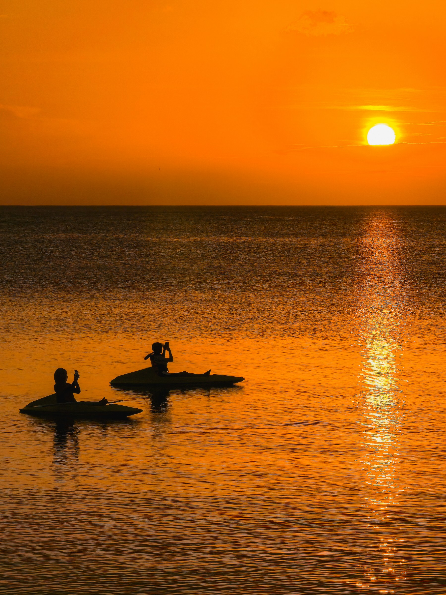
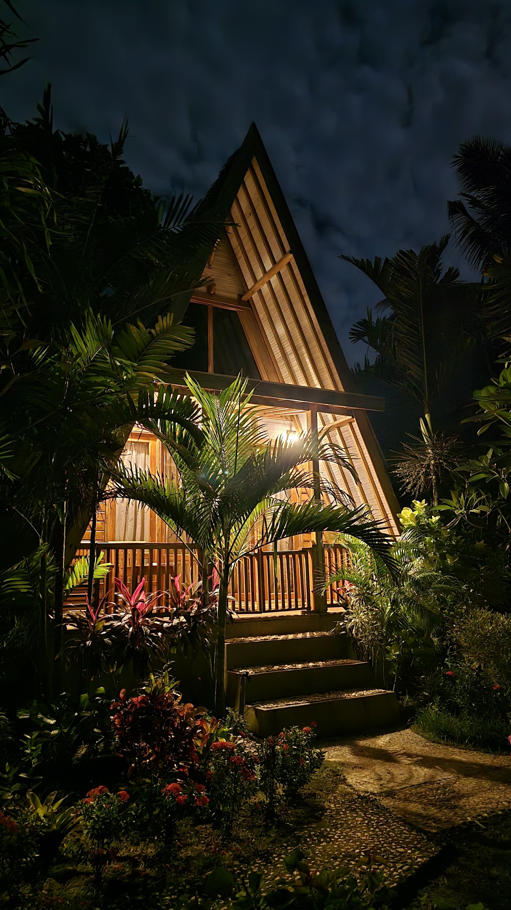
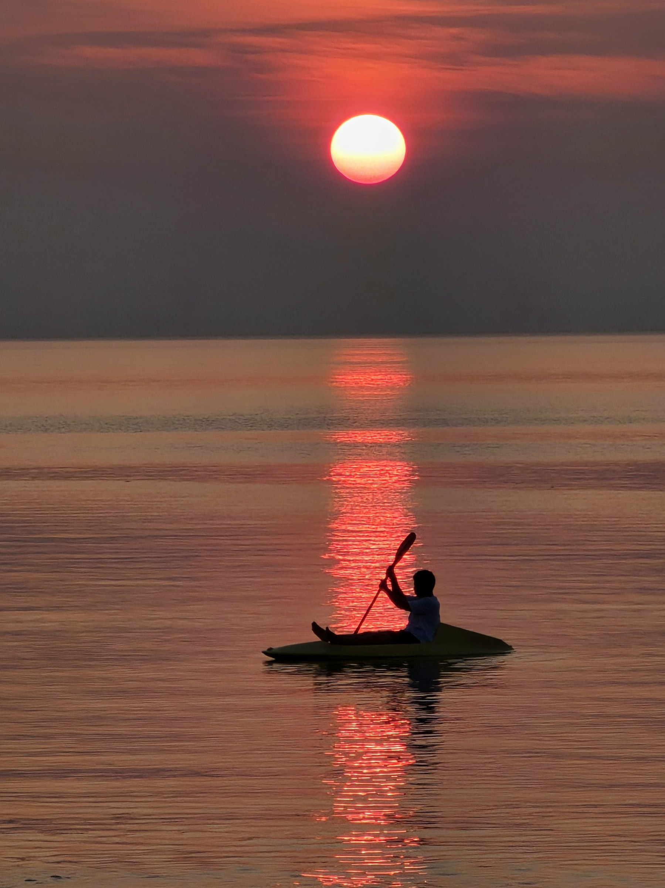
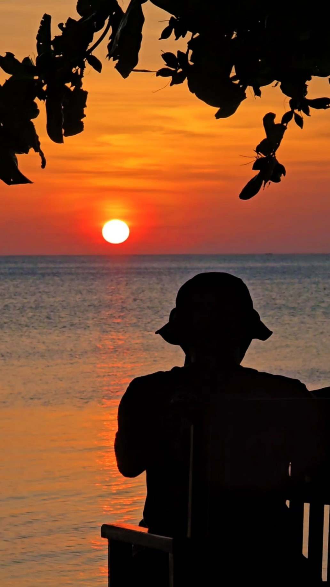
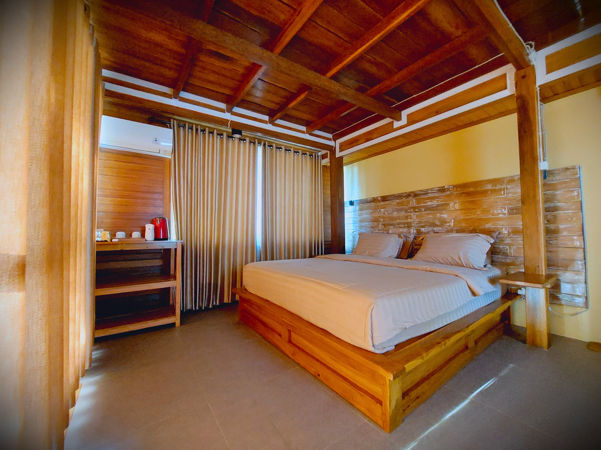
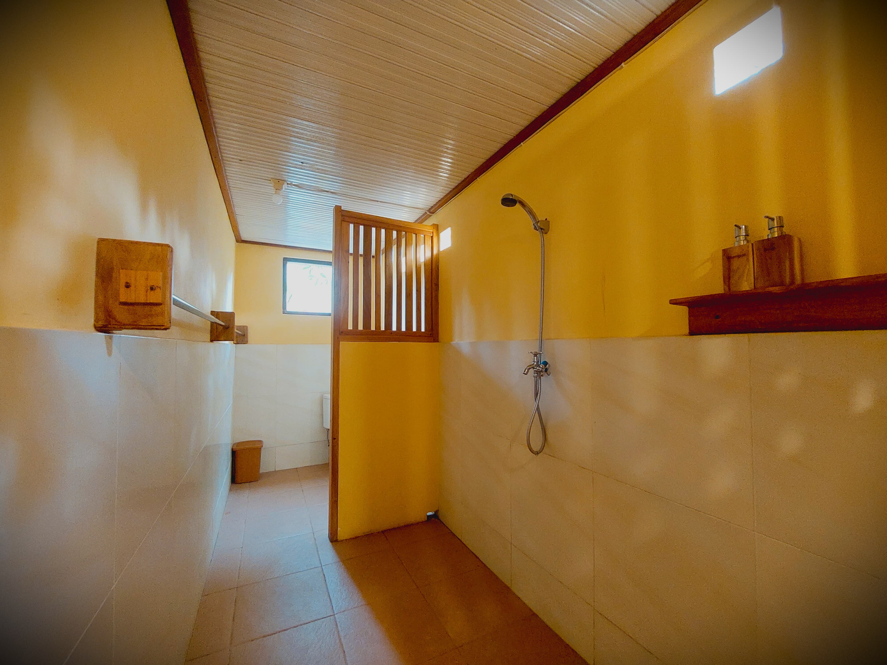

Lebih dari
Menginap.
Sebuah Rasa.
Menginap.
Sebuah Rasa.
SunaRi · Selayar










Tempat terbaik untuk kopi pagi dan obrolan sore, dengan pohon kelapa sebagai pemandangannya.

Langit-langit kayu menjulang dengan loteng di atasnya. Lapang, sejuk, dan hangat.

Lebih lapang dari Standard dan VIP Standard, dengan TV dan tirai blackout.

Mandi di bawah rain shower, ditemani taman hijau dan langit terbuka.


Dinding kayu, atap tinggi, tirai blackout, serta bantal dan selimut tambahan.

Kamar ber-AC dan Wi-Fi, dengan set kopi/teh dan pemanas air.

Shower dan toilet duduk, lengkap dengan perlengkapan mandi dan handuk.


Dua kursi, satu meja, dan rimbun tanaman tropis. Tempat pas untuk kopi sore.

Jendela segitiga, TV, mini bar/kulkas, dan tirai blackout.

Pintu kaca terbuka langsung ke teras dan taman.
Berendam air hangat di bawah atap kaca, dengan pohon kelapa di atas kepala.

Sofa kayu yang lega di antara pohon kelapa. Tempat ngobrol sambil menunggu senja.

Tempat tidur besar, tirai blackout, meja rias, dan set kopi/teh dengan pemanas air.

Ruang luas di bawah atap kayu tinggi, dengan empat kasur berjajar.

Perlengkapan mandi lengkap dan handuk bersih untuk setiap tamu.


Berdiri di tepi pantai, dinaungi pohon kelapa, dengan atap lengkung tradisional.

Perahu nelayan lewat di kejauhan, dan matahari terbenam tepat di depan mata.

Kayu dari lantai sampai atap, lampu dinding temaram, dan tirai blackout.

Kamar mandi luas dengan shower, perlengkapan mandi, dan handuk bersih.